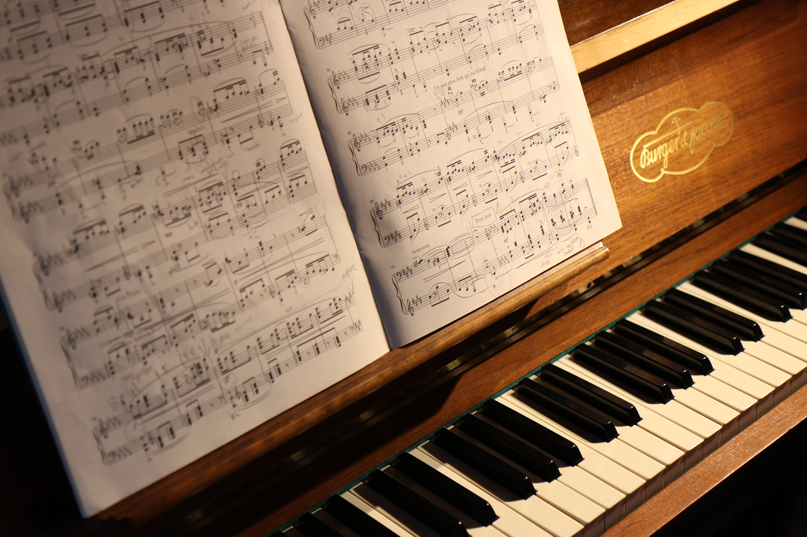

The Violin Sonata No. 9, Op. 47 in A major, by Ludwig van Beethoven, is a sonata for piano and violin notable for its technical difficulty, unusual length (around 40 minutes), and emotional scope. It is commonly known as the Kreutzer Sonata after the violinist Rodolphe Kreutzer, to whom it was ultimately dedicated, but who thoroughly disliked the piece and refused to play it.
In the composer's 1803 sketchbook the work was titled "Sonata per il Pianoforte ed uno violino obligato in uno stile molto concertante come d’un concerto".[1] The final movement of the work was originally written for another, earlier, sonata for violin and piano by Beethoven, the Sonata No. 6, Op. 30, No. 1, in A major.